- Generated by
 1.9.1
1.9.1
|
ERF
Energy Research and Forecasting: An Atmospheric Modeling Code
|
Functions | |
| void | fill_sea_level_pressure (MultiFab &destination, int destination_component, const MultiFab &conserved_state, const MultiFab &physical_nodal_height, int vapor_component, int klo) |
| AMREX_GPU_HOST_DEVICE AMREX_FORCE_INLINE amrex::Real | specific_humidity_from_dry_mixing_ratio (amrex::Real vapor_mixing_ratio) noexcept |
| AMREX_GPU_HOST_DEVICE AMREX_FORCE_INLINE amrex::Real | virtual_temperature (amrex::Real temperature, amrex::Real specific_humidity) noexcept |
| AMREX_GPU_HOST_DEVICE AMREX_FORCE_INLINE amrex::Real | apply_shuell_correction (amrex::Real virtual_temperature_surface, amrex::Real virtual_temperature_sea_level) noexcept |
| AMREX_GPU_HOST_DEVICE AMREX_FORCE_INLINE amrex::Real | reconstruct_surface_pressure (amrex::Real pressure_lowest_level, amrex::Real virtual_temperature_lowest_level, amrex::Real virtual_temperature_surface, amrex::Real height_lowest_level, amrex::Real height_surface) noexcept |
| AMREX_GPU_HOST_DEVICE AMREX_FORCE_INLINE amrex::Real | reduce_surface_pressure_to_sea_level (amrex::Real surface_pressure, amrex::Real temperature_lowest_level, amrex::Real specific_humidity, amrex::Real height_lowest_level, amrex::Real height_surface) noexcept |
| AMREX_GPU_HOST_DEVICE AMREX_FORCE_INLINE amrex::Real | compute_from_erf_lowest_level_state (amrex::Real dry_density, amrex::Real dry_density_times_potential_temperature, amrex::Real vapor_mixing_ratio, amrex::Real height_lowest_level, amrex::Real height_surface) noexcept |
| void | fill_sea_level_pressure (amrex::MultiFab &destination, int destination_component, const amrex::MultiFab &conserved_state, const amrex::MultiFab &physical_nodal_height, int vapor_component, int klo) |
Variables | |
| constexpr amrex::Real | lapse_rate = amrex::Real(0.0065) |
| constexpr amrex::Real | shuell_critical_temperature = amrex::Real(290.66) |
| constexpr amrex::Real | shuell_quadratic_coefficient = amrex::Real(0.005) |
| constexpr amrex::Real | sea_level_height = amrex::Real(0.0) |
| constexpr amrex::Real | surface_height_deadband = amrex::Real(1.0) |
NMC/NGM sea-level-pressure reduction with the Shuell correction.
The algorithm and empirical parameters are adapted from NOAA-EMC UPP, sorc/ncep_post.fd/NGMSLP.f, commit 1ee7b175c340a566287a987870d925e4708fe19b.
This ERF implementation uses ERF's native thermodynamic constants and reconstructs ground-interface pressure from the lowest cell-centered atmospheric state. It is therefore an adaptation of the UPP algorithm, not a bit-for-bit reproduction of UPP output.
|
noexcept |
Apply the NMC/NGM Shuell correction to the sea-level virtual temperature.
The strict/non-strict comparisons reproduce NGMSLP.f exactly. The quadratic temperature form is algebraically equivalent to UPP's tau-space form.
| [in] | virtual_temperature_surface | Ground-interface virtual temperature [K]. |
| [in] | virtual_temperature_sea_level | Uncorrected sea-level virtual temperature [K]. |
Referenced by reduce_surface_pressure_to_sea_level().
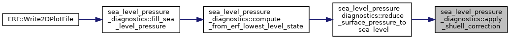
|
noexcept |
Compute the complete NMC/NGM reduction from an ERF conserved state.
ERF stores dry density, dry density times potential temperature, and (when active) dry-density times vapor mixing ratio. The pressure and temperature are diagnosed through ERF's EOS, then pressure is reconstructed at the ground interface before the method-specific sea-level reduction.
| [in] | dry_density | Lowest-level dry-air density [kg/m^3]. |
| [in] | dry_density_times_potential_temperature | Lowest-level rho_d theta [kg K/m^3]. |
| [in] | vapor_mixing_ratio | Lowest-level vapor mixing ratio [kg/kg dry air]. |
| [in] | height_lowest_level | Lowest cell-center physical height [m]. |
| [in] | height_surface | Ground-interface physical height [m]. |
Referenced by fill_sea_level_pressure().
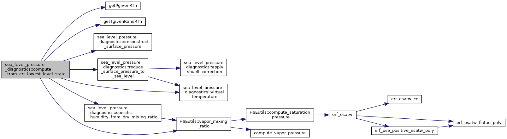
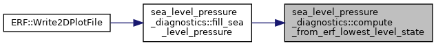
| void sea_level_pressure_diagnostics::fill_sea_level_pressure | ( | amrex::MultiFab & | destination, |
| int | destination_component, | ||
| const amrex::MultiFab & | conserved_state, | ||
| const amrex::MultiFab & | physical_nodal_height, | ||
| int | vapor_component, | ||
| int | klo | ||
| ) |
Fill one selected 2D field from each column's lowest ERF state.
| [out] | destination | 2D destination MultiFab; only destination_component is written. |
| [in] | destination_component | Component to fill in destination. |
| [in] | conserved_state | Cell-centered ERF conserved state MultiFab. |
| [in] | physical_nodal_height | Absolute physical nodal heights [m]. |
| [in] | vapor_component | Conserved vapor component, or -1 for a dry run. |
| [in] | klo | Lowest valid source-state vertical index for this AMR level. |
| void sea_level_pressure_diagnostics::fill_sea_level_pressure | ( | MultiFab & | destination, |
| int | destination_component, | ||
| const MultiFab & | conserved_state, | ||
| const MultiFab & | physical_nodal_height, | ||
| int | vapor_component, | ||
| int | klo | ||
| ) |
Referenced by ERF::Write2DPlotFile().
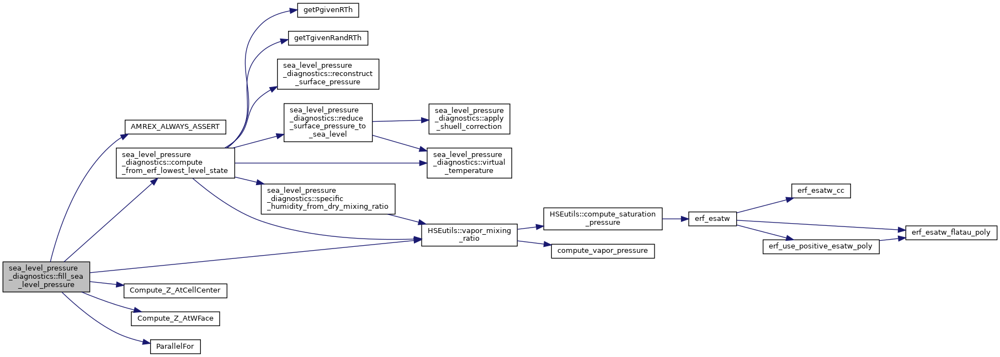
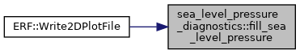
|
noexcept |
Reconstruct pressure at the lower terrain interface from the lowest cell.
| [in] | pressure_lowest_level | Lowest cell-center pressure [Pa]. |
| [in] | virtual_temperature_lowest_level | Lowest cell-center virtual temperature [K]. |
| [in] | virtual_temperature_surface | Ground-interface virtual temperature [K]. |
| [in] | height_lowest_level | Lowest cell-center physical height [m]. |
| [in] | height_surface | Ground-interface physical height [m]. |
Referenced by compute_from_erf_lowest_level_state().
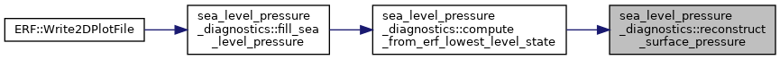
|
noexcept |
Reconstruct ground-interface pressure and reduce it to physical z=0.
| [in] | surface_pressure | Ground-interface pressure [Pa]. |
| [in] | temperature_lowest_level | Lowest cell-center temperature [K]. |
| [in] | specific_humidity | Lowest-level specific humidity [kg/kg]. |
| [in] | height_lowest_level | Lowest cell-center physical height [m]. |
| [in] | height_surface | Ground-interface physical height [m]. |
Referenced by compute_from_erf_lowest_level_state().
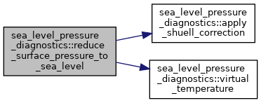
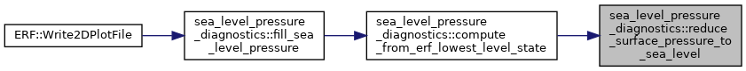
|
noexcept |
Convert ERF dry-air water-vapor mixing ratio to specific humidity.
| [in] | vapor_mixing_ratio | Water vapor mass per unit dry-air mass [kg/kg]. |
Referenced by compute_from_erf_lowest_level_state().
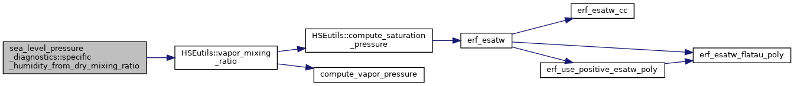
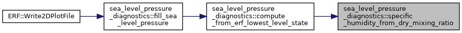
|
noexcept |
Compute virtual temperature using ERF's native gas constants.
| [in] | temperature | Physical temperature [K]. |
| [in] | specific_humidity | Specific humidity [kg/kg]. |
Referenced by compute_from_erf_lowest_level_state(), and reduce_surface_pressure_to_sea_level().
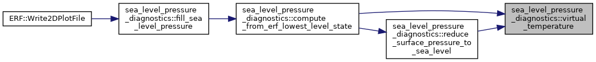
|
constexpr |
Referenced by compute_from_erf_lowest_level_state(), and reduce_surface_pressure_to_sea_level().
|
constexpr |
Referenced by reduce_surface_pressure_to_sea_level().
|
constexpr |
Referenced by apply_shuell_correction().
|
constexpr |
Referenced by apply_shuell_correction().
|
constexpr |
Referenced by reduce_surface_pressure_to_sea_level().